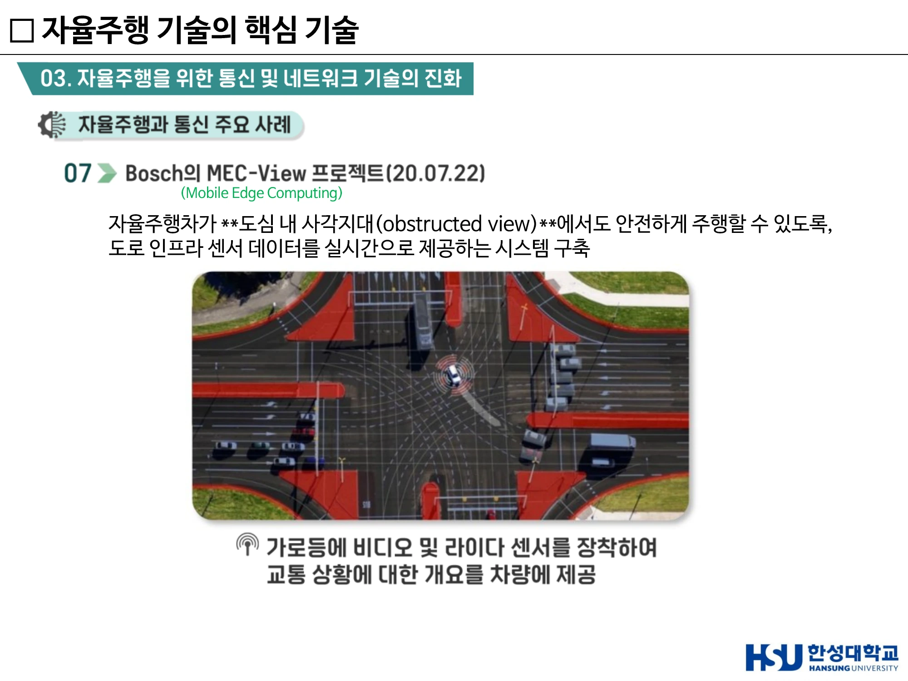
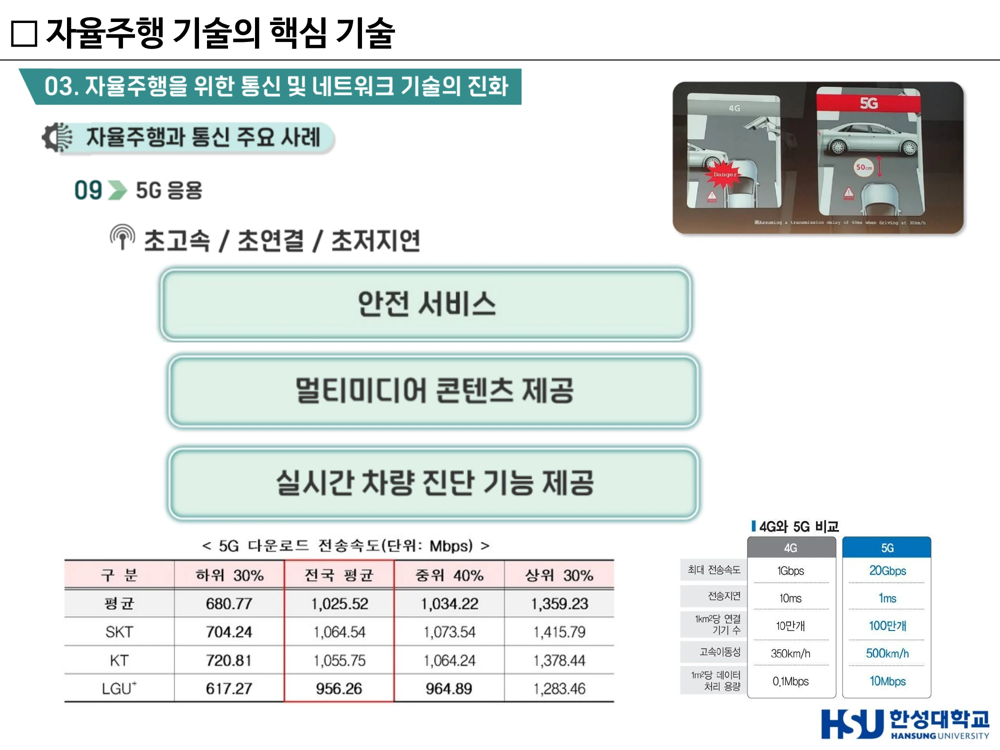
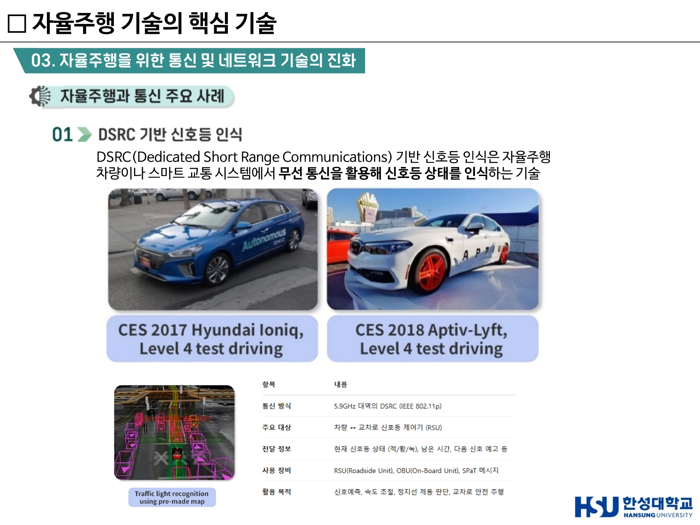

7주차 · 통신·V2X와 공학 설계 프로세스¶
🔗 강의 흐름 — 6주차 마지막 시나리오(안개 낀 야간 고속도로)에서 센서만으로는 부족하다는 것을 확인했다. 이번 주는 그 빈칸을 통신이 어떻게 메우는지 본다. 중간고사 서술형 4번(V2X)과 5번(도전과제)이 여기서 나오고, 2025년 서술형 3번의 7단계 공학 설계 프로세스도 이 주차 내용이다.
학습목표 — V2X 4유형을 정의하고 협조주행과 자율주행의 관계를 논하며, 통신 기반 자율주행 사례를 설명하고, 7단계 공학 설계 프로세스로 문제를 구조화할 수 있다.
💡 기초 다지기 — "센서는 보이는 것만 본다." 카메라는 선행 차량 너머를 인지하지 못하고, 라이다는 코너 뒤를 감지하지 못한다. 그러나 선행 차량이 "전방에 결빙 구간이 있다"는 정보를 전송해 주면, 직접 보지 않고도 알 수 있다. 이것이 V2X다. 자율주행이 "보는" 단계에서 "데이터로 이해하는" 단계로 넘어가는 것이다.
🗺️ 한눈에 보는 개념도¶
flowchart TB
V["차량 (Vehicle)"]
V <-->|V2V| V2["다른 차량"]
V <-->|V2I| I["인프라<br/>신호등·RSU"]
V <-->|V2P| P["보행자"]
V <-->|V2N| N["네트워크·클라우드"]
V <-->|V2G| G["전력망"]
I --> MEC["MEC<br/>도로 인프라 센서<br/>실시간 처리"]
MEC --> V
V --> COOP["자율협력주행<br/>에너지 효율↑ · 사고↓"]1. 왜 통신인가¶
"자동차를 기반으로 서비스를 만들어내야 되는 시대" — 자율주행 전기차 서비스로의 패러다임 변화
두 가지 필요성
| 구분 | 필요성 |
|---|---|
| 안전한 자율주행을 위한 기반 기술 | 도로·인프라·차량 실시간 연동 / 데이터 수집 및 제공 |
| 자율주행 차량에서 제공되는 서비스를 위한 기술 | 자율주행 서비스 / 멀티미디어 서비스 |
5G 자율주행 융합 서비스 4종 (과기부 기가코리아 사업단)
- 주문형 자율주행 교통 서비스
- 자율주행 물류/배송 서비스
- 자율주행 차량 관리 서비스
- 자율주행 콘텐츠 서비스
센서만으로는 한계가 있다¶
| 센서 | 인지하지 못하는 대상 |
|---|---|
| 카메라 ❌ | 전방 시야 확보 불가 (선행 차량에 가림) |
| 라이다 ❌ | 코너 뒤 감지 불가 |
→ 차들끼리 통신해서 해결한다. 전달되는 정보: 도로 상태(결빙, 파손), 교통 상황(혼잡, 사고, 고장 차량)
2. V2X — Vehicle to Everything¶
| 유형 | 대상 | 대표 활용 |
|---|---|---|
| V2V (Vehicle-to-Vehicle) | 차량 ↔ 차량 | 군집주행, 사고·급제동 경고, 사각지대 경고 |
| V2I (Vehicle-to-Infrastructure) | 차량 ↔ 신호등·도로 인프라 | 교통 사고 예방, 신호 예측(Time-to-Green), 속도 조절 |
| V2P (Vehicle-to-Pedestrian) | 차량 ↔ 보행자 | 보행자 안내·충돌 경고 |
| V2N (Vehicle-to-Network) | 차량 ↔ 네트워크·클라우드 | 상태 공유, 원격 관제, 콘텐츠 |
| V2G (Vehicle-to-Grid) | 차량 ↔ 전력망 | 전력망 전력 공급·수요 반응 |
시험 포인트
- "V2I 통신이 주로 사용되는 목적은?" → 교통 사고 예방
- "대형 트럭 군집 주행에서 트럭 간의 무선 데이터 교환 방식은?" → V2V
- 서술형 4번(2026): "V2X 통신의 4가지 유형(V2V, V2I, V2P, V2G)을 각각 정의하고, V2X 기반 협조주행(Cooperative Driving)과 자율주행(Autonomous Driving)의 관계를 논하시오."
협조주행 vs 자율주행 — 서술형 대비 정리¶
| 구분 | 자율주행 (Autonomous Driving) | 협조주행 (Cooperative Driving) |
|---|---|---|
| 정보원 | 자차 센서(카메라·라이다·레이더) | 자차 센서 + 외부(차량·인프라·클라우드) |
| 인지 범위 | 가시선(Line of Sight) 내 | 비가시선(NLoS)까지 확장 |
| 독립성 | 통신 없이도 동작 | 통신 인프라에 의존 |
| 관계 | 기반 | 자율주행의 한계를 보완·확장 |
→ 협조주행은 자율주행을 대체하는 것이 아니라 완성시킨다. 통신이 끊겨도 자율주행은 동작해야 하므로 센서 기반은 필수이고, 통신은 그 위에 안전 마진과 효율을 더한다.
3. 통신 기반 자율주행 주요 사례 9선¶
① DSRC 기반 신호등 인식¶
DSRC (Dedicated Short Range Communications) 기반 신호등 인식은 자율주행 차량이나 스마트 교통 시스템에서 무선 통신을 활용해 신호등 상태를 인식하는 기술.
| 항목 | 내용 |
|---|---|
| 통신 방식 | 5.9GHz 대역의 DSRC (IEEE 802.11p) |
| 주요 대상 | 차량 ↔ 교차로 신호등 제어기 (RSU) |
| 전달 정보 | 현재 신호등 상태(적/황/녹), 남은 시간, 다음 신호 예고 등 |
| 사용 장비 | RSU(Roadside Unit), OBU(On-Board Unit), SPaT 메시지 |
| 활용 목적 | 신호예측, 속도 조절, 정지선 제동 판단, 교차로 안전 주행 |
사례 — CES 2017 Hyundai Ioniq Level 4 test driving / CES 2018 Aptiv-Lyft Level 4 test driving
② Audi Time-to-Green¶
차량이 신호등과 통신해서 초록불까지 남은 시간을 알려 주는 기술.
- 왜 중요한가 — ① 운전자 편의(미리 알 수 있음) ② 연비 개선(급가속하지 않고 부드럽게 출발) ③ 자율주행차가 신호를 '보는' 것이 아니라 '데이터로 이해하는' 단계로 넘어감
③ 해킹과 보안에 대한 대비¶
"연결이 많아질수록 해킹 위험이 같이 커진다."
Shift 10: Smart Cities
- 변곡점(Tipping Point) — 인구 50,000명 이상의 도시에서 신호등 없이 운영되는 최초의 도시 출현
- 예상 시점 — 2026년
- 응답자 전망 — 2025년까지 64%가 이 변곡점에 도달할 것이라 예상
부정적 영향 (Negative Impacts)
- 감시 및 프라이버시 침해 — 고도화된 센서·CCTV·통신 인프라 기반이므로 개인정보 침해 우려
- 시스템 붕괴 위험(Total Blackout) — 에너지 시스템 또는 IT 인프라 장애 시 전체 도시 기능 마비 가능
- 사이버 공격에 대한 취약성 증가
④ 자율주행 레벨 3과 통신¶
- Handover and communication — 제어권 넘김. 차가 운전하다 사람에게 넘길 수도, 다시 받아올 수도 있는데 이 과정에서 통신이 중요하다. 시스템 → 운전자로 개입 요청이 전달되며, 차량과 클라우드가 상태를 공유한다
- V2X information — Swarm intelligence / Car-to-X
⑤ 캘리포니아 운전자 없는 자율주행차 규정¶
- 승객과 원격 운영자 간의 쌍방향 통신 연결
- 제조사의 통신 모니터링 방법 인증
⑥ Snake Road (State Route 190)¶
V2X 응용 — 도로의 상태(결빙, 파손 등) 및 교통 상황(혼잡도, 고장 등) 전송 가능.
⑦ Cavnue — 세계 최초 "자율주행 전용 도로"¶
- 통신으로 연결되는 자율주행차와 도로
- 도로와 차량의 데이터 공유
- 일반 차량보다 빠르게 이동할 수 있도록 설계
⑧ Bosch MEC-View 프로젝트 (2020.07.22)¶
MEC = Mobile Edge Computing
- 자율주행차가 도심 내 사각지대(obstructed view)에서도 안전하게 주행할 수 있도록, 도로 인프라 센서 데이터를 실시간으로 제공하는 시스템 구축
- 가로등에 비디오 및 라이다 센서를 장착하여 교통 상황에 대한 개요를 차량에 제공

▲ Bosch MEC-View — 가로등에 비디오·라이다 센서를 달아 도심 사각지대 정보를 차량에 실시간 제공 (출처: 7주차 슬라이드 p21)
⑨ 5G 응용¶
초고속 / 초연결 / 초저지연
| 항목 | 4G | 5G |
|---|---|---|
| 최대 전송속도 | 1 Gbps | 20 Gbps |
| 전송지연 | 10 ms | 1 ms |
| 1km²당 연결 기기 수 | 10만 개 | 100만 개 |
| 고속이동성 | 350 km/h | 500 km/h |
| 1m²당 데이터 처리 용량 | 0.1 Mbps | 10 Mbps |
서비스 — 안전 서비스 / 멀티미디어 콘텐츠 제공 / 실시간 차량 진단 기능 제공
1ms가 왜 중요한가
시속 100km로 달리는 차는 10ms에 약 28cm를 간다. 지연이 1ms로 줄면 그 거리가 2.8cm가 된다. 긴급 제동 명령 전달에서 이 차이가 곧 제동거리 차이가 된다.

▲ 5G 응용 — 초고속·초연결·초저지연, 4G 대비 20Gbps/1ms/100만 개 비교표 (출처: 7주차 슬라이드 p23)
현대자동차 대형트럭 군집주행 (2019.11)¶
물류산업 혁신 + 연비 및 배출가스 저감 — 상세는 5주차 참조.

▲ DSRC 기반 신호등 인식 — 5.9GHz IEEE 802.11p, RSU·OBU·SPaT 메시지 (출처: 7주차 슬라이드 p14)
4. 정리 및 시사점 — 자율주행과 통신 융합¶
| 축 | 효과 |
|---|---|
| 센서 한계 극복 | → 사각지대 극복 / 차량 시야 확대 |
| 정밀 측위 응용 | → 상대위치 추정 / 악천후 극복 / Digital Twin |
| 자율협력주행 | → 에너지 효율 증가 / 사고 저감 |
발전 방향
- V2X 정밀 측위를 통한 Digital Twin 구축 — 실도로 로그를 시뮬레이션에서 전량 재생(Replay logged real-world data in simulation)
- 클라우드 기반 원격제어 / 원격자율주행
- 자율주행 실내 콘텐츠 서비스
- 관광 등 연계 서비스 응용
4차 산업혁명과 차량 관련 변화
- 주문형 교통 시스템 = 승차공유 + 자율주행
- 자율주행 물류 및 배송 — 자율주행차에 따른 물류·배송 변화 (Mercedes-Benz Vision Van)
- 맞춤형 자동차 = 전기차 플랫폼 + 3D 프린팅
- 스마트 시티 — 도시의 변화와 자율주행차 융합
자율주행 차량 플랫폼 — Autoware 구조¶
flowchart LR
S["Sensing<br/>LiDAR · Camera · 3D Map"] --> C
subgraph C["Computing"]
direction TB
PER["Perception<br/>Localization → Detection → Prediction"]
PLA["Planning<br/>Mission Planning → Motion Planning"]
DEC["Decision<br/>State Machine · Intelligence"]
PER --> PLA
PER --> DEC
DEC --> PLA
end
C --> A["Actuation<br/>Path following · Steering · Accel/Brake"]자율주행 금융¶
자율주행차량 자체 결제 — 자율주행 차량이 스스로 결제(정비소, 주유소, 세차).
5. 모빌리티 데이터로 읽는 사회¶
"빅데이터가 아닌 모빌리티 데이터" (카카오모빌리티 리포트)
- 빅데이터 — 예전에 볼 수 없던 수준의 크기와 속도, 다양한 형태로 축적되는 데이터. 많은 기업들이 목적을 위해 빅데이터를 수집·분석하는 데 많은 비용과 인력 투입 중
- 모빌리티 데이터 — 출도착 지점, 소요시간, 비용 등 데이터의 형태도 다양함
핵심 질문
"평소에 많이 보이던 빈 택시는 왜 내가 필요할 때만 안 잡히는 걸까?" → 모빌리티 데이터는 모두가 체감상 알고 있던 불편함의 원인을 정확하게 파악하고, 해결책을 찾기 위한 기술 혁신의 단초 역할을 한다.
분석 사례
| 사례 | 발견 |
|---|---|
| 수도권 시간대별 택시 수요와 공급 | 시간·장소·기상 여건에 따른 수요·공급 패턴 |
| 세계불꽃축제 (2017.9.30 21~22시) | 지역 축제 시 수요·공급 불균형 폭발적 가중 |
| 월드컵 응원일 (2018.6.18 23~24시) | 동일 |
| 기상악화 시 택시 수요·공급 (2017.9~2018.8, 서울) | 폭염·혹한·폭우·폭설 시 불균형 심화 |
| 주 52시간 근로제 시행(2023.7) 이후 | 모빌리티 데이터로 직장인의 삶의 변화를 읽음 |
"무인 자율주행차가 모빌리티 서비스에서 수요 공급의 불일치를 보완해 줄 것으로 기대"
6. 7단계 공학 설계 프로세스 — 과제·서술형 대비¶
이 주차의 후반부는 미래 자동차산업 아이디어 공모전 준비와 연결된다. 2025년 중간고사 서술형 3번이 "도심에서의 자율주행 차량 도입이 직면한 주요 도전 과제와 해결 방안을 7단계 공학 설계 프로세스 모델링 기법에 따라 서술하시오" (20점)였다.
실제 적용 사례 — 과속방지턱 문제¶
1단계 · 문제 정의 — 과속방지턱으로 인한 부작용
| 구분 | 세부 내용 |
|---|---|
| 운전자 | 운전자·탑승자 승차감 저해 / 신체부상(척추, 등뼈 등) 초래 / 운전조작 어려움(핸들을 놓치는 경우) / 불안심리 및 피로 조장 |
| 자동차(이륜차 포함) | 하부 및 조향장치(휠얼라이먼트, 타이어) 손상 / 급제동으로 인한 추돌사고 / 차내 안전사고 유발 / 불필요한 가·감속으로 연료 및 브레이크 패드 소모 |
| 도로·환경 | 과속방지턱을 피하는 차량에 의한 보행자 공간 침범 / 급제동·급출발 및 통행 시 소음 발생 / 제동 후 급가속 차량으로 인한 환경오염 |
2단계 · 정보 수집 — Mercedes-Benz Magic Body Control
- Stereo Camera는 전방 4.5~13.7m 영역에서 최소 10~20mm 요철을 인식
- 최초 컨셉에는 Lidar 센서를 썼으나, 양산화 과정에서 Stereo Camera로 대체함 → 5주차의 "비용 대비 성능 최적화"가 실제 제품에서 어떻게 나타나는지 보여 주는 사례
3단계 · 해결책 모색 — 구조 / 시스템 관점
시스템 구성 예:
flowchart LR
IN["Stereo Camera<br/>IMU · Radar<br/>Vehicle Speed …"]
--> EST["State estimation<br/>Perception"]
--> REP["Vehicle State<br/>Environment Representation"]
--> CTL["Control"]
--> ACT["Actuator Command"]
IN -.->|End-to-End Deep Learning| ACT- 강화학습 예시 구조 — Observation → 256 nodes → 128 nodes → 192 nodes → Action(P target for links, D target for wheels)
- 사용 언어 — C, C++, Python
참고 — 바퀴의 역사와 미래 (수업 중 사례)¶
| 시기 | 내용 |
|---|---|
| 기원전 4천~5천년경 | 메소포타미아에서 처음 사용 (그릇을 빚는 도자기 물레) |
| 1846년 | 토머스 핸콕, 바퀴에 고무를 사용. 통고무 구조 — 장점: 나무·금속처럼 미끄러지지 않고 충격 보완 / 단점: 발열에 의해 내구성 부족 |
| 현재~미래 | 한국타이어 '부스트랙'(가변형 블록 구조) / 브릿지스톤 에어 프리 타이어 / 굿이어 이글 360 / 한국타이어 PMV / 모빈(MOBINN) 배달 로봇(계단 극복) |
산업혁명 = 바퀴 재료의 큰 변화의 시작
🤔 생각해 봅시다¶
- 중간고사 서술형 5번 연습 — 도심 자율주행 확산 과정에서 발생할 수 있는 기술적·윤리적·법제도적 도전 과제를 각각 1개 이상 제시하고 해결 방안을 논리적으로 서술하시오.
- 기술: 사각지대·악천후·Edge case → 센서 퓨전 + V2X + 시뮬레이션 검증
- 윤리: 사고 시 선택(보행자 vs 탑승자), 책임 소재 → 투명성·설명가능성·기록장치(DSSAD)
- 법제도: 레벨 3 책임 배분, 데이터·개인정보, 보험 → 규제 샌드박스·시범운행지구·국제 조화(UNECE)
- Shift 10처럼 신호등이 없는 도시가 가능하려면 무엇이 전제되어야 하는가? 그 도시에서 정전이 발생하면 어떤 일이 벌어지는가?
- 카카오모빌리티 사례처럼, 학교 주변의 어떤 불편을 모빌리티 데이터로 설명할 수 있는가?
✅ 이번 주 체크리스트¶
- V2V/V2I/V2P/V2N/V2G를 각각 정의하고 대표 활용을 말할 수 있다
- DSRC의 주파수(5.9GHz)·표준(802.11p)·장비(RSU/OBU/SPaT)를 안다
- MEC-View가 무엇을 해결하는지 설명할 수 있다
- 4G 대비 5G의 4대 지표 수치를 안다
- 협조주행과 자율주행의 관계를 한 단락으로 논할 수 있다
- 7단계 공학 설계 프로세스로 문제를 구조화할 수 있다
▶️ 다음 주 예고 — 중간고사(40%). 1~7주차 전 범위. → 8주차